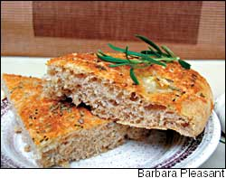
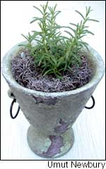

A classic culinary herb, rosemary makes a great dry rub ingredient for meats, brings out the savory flavor highlights of beans and lentils, gives flavor momentum to breads, and pairs beautifully with lemon in sweet cakes and custards.
Rosemary imparts a refreshing, resinous flavor to a variety of foods, savory and sweet, as well as to herbal teas. It contains so many antioxidants that it has historically been used as a meat preservative. When paired with fresh pork, poultry, lamb or even beef, it makes an ideal dry rub ingredient. Mix a tablespoon of chopped fresh rosemary with 2 tablespoons of flour, add a bit of salt and pepper, and rub the mixture onto meats before they are roasted. When you’re roasting a whole chicken, just stick a few clipped sprigs into the cavity.
Rosemary (Rosmarinus officinalis) also can transform plain roasted potatoes. Wash and quarter the potatoes, toss them with a tablespoon each of olive oil and fresh rosemary, add salt and pepper to taste, and roast until done. A pinch or two of rosemary in a pot of beans or lentils brings out savory flavor highlights, and a sprinkling of minced rosemary mixed with mustard makes a fantastic sandwich spread. It’s best to use rosemary in moderation; in large amounts, it can irritate the stomach.
Another favorite use is to top off focaccia, a flat yeast bread, with rosemary and garlic, one of rosemary’s classic culinary partners. Small amounts of rosemary also can be added to cakes or custards, where its flavor pairs beautifully with another good culinary companion, lemon.
Long known as the herb of remembrance, rosemary has the ability to stimulate the brain as well as the taste buds. Though no hard evidence exists that using rosemary-scented hair-care products will make you smarter, one of the reasons the herb is included in many such items is because of its brain-enhancing properties. You can utilize these properties, too, simply by pinching a sprig into tiny pieces and keeping them in a little bowl on your desk. Even if it does not sharpen your wit, it will certainly make your office more inviting.
Mix dried rosemary into any potpourri, and for a refreshing bath, add dried or fresh rosemary leaves to a bath bag, which you can rig up easily by placing the rosemary in a coffee filter tied with a rubber band. Rosemary contains antioxidants that may help relieve arthritic inflammation and prevent the formation of tumors. To treat stress, massage therapists often use a mixture of 3 drops rosemary essential oil in 1 tablespoon of unscented massage oil. And rosemary can be woven into herbal wreaths and tucked into letters destined for loved ones, too.
Rosemary looks beautiful in the garden, in the ground or in a pretty pot. In summer, its needle-shaped green leaves are topped by tiny blooms in shades of lavender to purple - and some even bloom pink.
Varieties vary in their growth habits, too. Most are compact, upright sub-shrubs - just right for containers - but others trail beautifully, making them a great plant selection to cascade down a stone wall. In any size, rosemary needs full sun and benefits from periodic trimming to keep it shapely. But beyond routine watering, feeding and trimming, rosemary practically grows itself.
In the garden, rosemary’s biggest limitation is a lack of winter hardiness. A few varieties, including ‘Arp,’ can survive winters in Zones 6 to 7, but most others die when exposed to temperatures below about 20 degrees. To complicate matters, plants are often so large by summer’s end that bringing them indoors for the winter can be problematic. If your winters are too cold for rosemary, but you want to keep the same plant each year, root a few stem cuttings in late summer and pot up these little plants to keep indoors through winter. Better yet, in summer when plants are actively growing, bend down an outer branch or two, scratch off the leaves and bark in the section of stem that meets the soil, and peg it in place with a stone or bent-out paper clip. The buried section of stem will slowly grow roots, and it can be severed and potted up to take indoors in the fall.
Water rosemary only during droughts or, indoors, when its potting soil feels dry, because it won’t tolerate wet feet. Healthy plants always produce plenty of stems, which are easy to dry,
either by hanging long branches in small bunches or laying small sprigs on screens or another flat surface. Kept in airtight containers, dried rosemary will hold its flavor for months.
North Carolina writer Barbara Pleasant is a Mother Earth News contributing editor. Her newest book is The Whole Herb, recently released by Square One Publishers.
The flat bread, called focaccia in Italy, makes a delicious bread accompaniment to soup. This variation has a spongy texture because it is not kneaded.
3 tablespoons extra-virgin olive oil
3 2-inch sprigs fresh rosemary (or 1 teaspoon dried)
3 large garlic cloves, quartered
1-1¼ cups warm water
1 package dry yeast
1 tablespoon honey
1 cup all-purpose unbleached or bread flour
1-1¼ cups whole wheat flour
1 teaspoon salt
1 cup finely shredded provolone or asiago cheese
1 tablespoon chopped fresh rosemary (or 1 tsp. dried)
Place the olive oil, rosemary sprigs and garlic in a small saucepan, and warm over medium-low heat for 5 minutes, until the garlic just begins to sizzle. Turn off the heat and set aside. Place the warm water in a large bowl and sprinkle the yeast on top. Add honey, stir to blend and then add the all-purpose or bread flour. Mix well and set aside for 30 minutes. Remove the rosemary and garlic from the oil. Discard the rosemary and coarsely chop the garlic. Add half of the scented olive oil and the salt to the yeast sponge, stir and then add the whole wheat flour. Stir well for 2 minutes (the dough will be quite sticky). Cover with a damp cloth and set to rise in a warm, draft-free place for 45 minutes. Coat a cookie sheet with cooking spray. Oil your hands with the remaining oil and lightly shape the dough into a ball. Place it on the prepared cookie sheet and press to form a half-inch-thick oval, about 12 inches wide and 14 inches long. Sprinkle the cheese evenly over the top, followed by the garlic and chopped fresh rosemary. Let rise for 30 minutes. Bake in a preheated 400-degree oven until lightly browned, for about 20 minutes.
In addition to richly flavored rosemary, an amazing number of wonderful herbs that may be hard to find locally are available through the mail. Here is a sampling of mail-order companies that offer excellent selections of both seeds and plants:
Garden Medicinals & Culinaries (Va.)
(434) 964-9113 www.gardenmedicinals.com
Fedco Seeds (Maine)
(207) 873-7333 www.fedcoseeds.com
Johnny’s Selected Seeds (Maine)
(800) 854-2580 www.johnnyseeds.com
Well-Sweep Herb Farm (N.J.)
(908) 852-5390 www.wellsweep.com
Richters Herbs (Ontario)
(905) 640-6677 www.richters.com
William Dam Seeds (Ontario)
(905) 628-6641 www.damseeds.com
Seeds of Change (N.M.)
(888) 762-7333 www.seedsofchange.com
Mountain Valley Growers (Calif.)
(559) 338-2775 www.mountainvalleygrowers.com
Nichols Garden Nursery (Ore.)
(800) 422-3985 www.nicholsgardennursery.com
Horizon Herbs (Ore.)
(541) 846-6704 www.horizonherbs.com
|
 |
 |
|